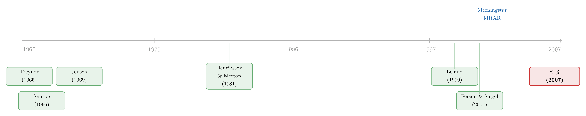

把「跑分」交给基金经理之前，先问问这个分数能不能被刷
本文读的是 Goetzmann, Ingersoll, Spiegel & Welch (2007, Review of Financial Studies)：几乎所有常用的业绩衡量指标——夏普比率、alpha、Treynor、Sortino、择时回归——都能被「不含任何信息」的动态交易刷高，哪怕交易成本高达 20% 也拦不住；而满足四条性质的「防操纵」指标唯一存在，它长得像一条幂效用函数在收益历史上的平均，恰好就是 Morningstar 在 2002 年悄悄启用的那把尺子。
1 引言：一个能被刷的分数
我们先承认一件事：评价一个基金经理，本该是件很「重」的事。他的风格是什么？是不是偷偷在指数边上贴着走（closet indexing）？换手率高不高、费率贵不贵？年底有没有粉饰橱窗（window dressing）？这些「输入端」的考察，才是真正把收益放进风险与成本的天平里去称量的办法。
但现实里，投资者手上往往只有「输出端」——一串按月报出来的收益率。于是 1966 年，William Sharpe 用均值—方差理论给了世界一个一维的、可排序的数字：夏普比率 (Sharpe ratio)。三年后 Jensen (1969) 又给了 alpha，第一个基于基准的指标。从此，给基金经理「跑分」成了一门生意——Morningstar、Lipper 这些评级机构，本质上都是在把基金按某个标量排个座次。
可问题也就在这里。如果投资者用一个标量来排序、来选人，那么基金经理就有了一个再明显不过的动机：把这个分数刷高。刷分的办法有两种，一种是靠真本事——研究、选股、择时；另一种，是靠「不含信息的活动」（information-free investing），即不给投资者创造任何价值，却能让那个数字变好看的操作。本文把后者称作操纵 (manipulation)。
于是一个很自然、却让整个业绩评估行业脊背发凉的问题浮出水面：我们天天在用的这些指标，到底有多容易被刷？刷到什么程度？有没有一个分数，是怎么都刷不动的？
这篇文章的全部张力，就在这一个问题上。
2 一个让人脊背发凉的例子
我们先看最戏剧化的一幕。
假设一个评价者打算用 36 个月的月度数据来估一只基金的夏普比率：算超额收益的均值，算它的标准差，相除。而基金经理只想最大化这个被算出来的夏普比率的期望值。
他该怎么做？方法简单到近乎荒诞：第一个月，卖出一份价外期权 (out-of-the-money option)，把剩下的钱全部买无风险资产。如果这份期权到期作废（有严格为正的概率会发生），那么从此以后的 35 个月，组合全仓无风险资产。
这意味着什么？只要那份期权作废，整段历史里组合的标准差就是零，超额收益却是正的——夏普比率瞬间变成无穷大。而既然期权作废的概率严格为正，被算出来的夏普比率的期望值，就必然是无穷大。
注意，这里评价者没有犯任何估计错误——他诚实地拿到了真实数据、用了教科书上的公式。可基金经理什么也没干，就把一个本该衡量「风险调整后收益」的指标，刷到了天上。更糟的是，提高观测频率（比如改用日度数据）根本挡不住这类动态操纵。
这就是全文的「钩子」。它告诉我们：被刷的不只是估计误差，而是指标本身的设计哲学出了问题。
3 操纵的三张面孔
把上面那个例子拆开看，文章其实归纳出了三种一般性的操纵策略，理解它们是理解后文的关键。
第一张面孔：操纵分布本身。 在一个静态世界里，只要你能改变收益的分布函数，就能改变它的均值和方差，从而抬高夏普比率。Ferson & Siegel (2001) 研究了相当一般的情形，Lhabitant (2000) 则演示了「只用几份期权」就能造出看似惊艳的数值。这一类操纵，即便评价者零估计误差也防不住——因为问题出在分布，不出在样本。
第二张面孔：制造时间上的「非同分布」。 几乎所有指标的统计量都建立在「收益独立同分布 (i.i.d.)」的假设上。可一旦组合的持仓随着自己的历史业绩动态调整，这个假设就被打破了。一个走运的经理，可以根据「过去已实现的分布」去倒推「未来该摆出什么分布」，让历史的好运在整段度量里占更大的权重。
第三张面孔：故意制造估计偏差。 因为指标终究要用真实数据去估，所以总有办法在估计量里塞进正向的偏误。第 2 节那个无穷夏普比率，就是这一类的极致。
三张面孔背后是同一句话：只要指标对收益历史的依赖方式不对，就总有一条不含信息的路径能把它刷高。
4 动态操纵：夏普比率与 alpha 是怎么被掰弯的
接着，一个自然的问题是：上面第二张面孔——动态操纵——到底能掰出多大的力气？文章给了非常具体的算法。
设一个经理到目前为止已实现了历史超额收益均值 \(x_h\)、标准差 \(\sigma_h\)，对应历史夏普比率 \(S_h\)；未来这段他还能做到的夏普比率记为 \(S_f\)。\(\gamma\) 是已经走过的时间占比。那么整段期间被度量出来的夏普比率，在「未来该用多大杠杆」上有一个最优解：
$$ x_f^{*} = \begin{cases} x_h\,(1+S_h^{-2})/(1+S_f^{-2}) & \text{for } x_h>0 \\[4pt] \infty & \text{for } x_h\le 0. \end{cases} $$
这个式子的直觉漂亮得让人会心一笑：走运了，就收敛；倒霉了，就加杠杆。 如果过去运气好（\(S_h>S_f\)），未来就该把组合的目标均值和方差都调低，让那段好运在整体度量里压得更重；如果过去运气差（\(S_h 把它代回去，整段能实现的夏普比率是 \(S_h\) 的增函数且凸函数——也就是说，动态刷分平均而言能把夏普比率顶到理论上限 \(S_{MSR}\) 之上。 数字有多吓人？文章做了模拟：在一个风险溢价 12% 的对数正态市场里，经理在 5 年评估期走过 30 个月后重新加杠杆，能把夏普比率做到 而且别忘了，作为参照，那个静态的最大夏普比率组合（MSR）本身就有一个解析的刻画——它在状态 \(i\) 上相对无风险利率的超额收益是 $$
x_i^{\text{MSR}} = x_{\text{MSR}}\left(1 + \frac{1-\hat{p}_i/p_i}{S_{\text{MSR}}^{2}}\right),
$$ 其中 \(p_i\)、\(\hat p_i\) 是状态 \(i\) 的真实概率与风险中性概率，\(S_{\text{MSR}}\equiv\big(\sum_i \hat p_i^2/p_i-1\big)^{1/2}\) 是可达到的最大夏普比率。这本是「静态最优」，可一旦允许动态调仓，它就不再是上限了。 alpha 也没能幸免。Jensen 的 alpha 是市场模型回归 \(x_t=\alpha+\beta x_{mt}+\varepsilon_t\) 的截距。最大夏普比率组合的 alpha 是 $$
\alpha_{\text{MSR}} = x_{\text{MSR}}\left(1-\frac{S_{\text{mkt}}^{2}}{S_{\text{MSR}}^{2}}\right) > 0,
$$ 而它能靠杠杆被做到任意大。动态版本更直接：过去市场表现好，就在未来降低市场敞口，于是用全样本拟合出来的市场线斜率会落在 1 和真实敞口之间，截距 \(\alpha\) 凭空变正。这和刷夏普比率的逻辑一模一样——好运之后降杠杆，坏运之后加杠杆。（关于「会动的 beta」如何让人误以为经理有择时本事，可参见《会动的 beta：基金经理的「择时本事」，是真的，还是统计模型替他造出来的？》。） 文章一口气检验了七个指标——四个比率（Sharpe 1966、Sortino & van der Meer 1991、Leland 1999、Sortino et al. 1999）和三个回归截距（CAPM alpha、Treynor-Mazuy 1966、Henriksson-Merton 1981）——结论是一致的「不容乐观」。最刺眼的是 Henriksson-Merton 择时指标：在交易成本高达 到这里，反转该出现了。 如果现有指标全军覆没，那么真正关键的一步，是反过来问：一个「防操纵的业绩衡量指标」(manipulation-proof performance measure, MPPM) 该长什么样？要回答，得先定义「防操纵」是什么意思。文章给了四条性质： 这四条看似温和，却足以唯一地钉死一个指标。第一条排除了只能给出部分排序的、以及「干脆把收益列表全列出来」这种没用的指标。第二条说返回的得是收益率。第三、四条提供真正的结构：要让经理无法靠观测数据上的估计来占便宜，分数必须同时 这里有一个常被忽略的「负面结论」，它和正面结论同样重要：如果这四个条件不被满足，那就根本不存在任何防操纵指标。 换句话说，给定任意一个不满足这四条的业绩统计量，永远能找到一条不靠优越信息就把它刷高的路。所以对经理的道德风险问题，不存在第一最优解——不含信息的操纵永远是可能的。 这是一篇有完整推导的论文，值得我们把那把唯一的尺子一步步拼出来。 第一步：要一个收益历史上的函数。 我们要的分数 \(\hat\Theta\) 是观测到的收益序列 \(\{r_t\}\) 的函数。性质 2 要求它只看收益率不看美元，性质 1 要求它是个标量。 第二步：时间可分 ⇒ 跨期求平均。 性质 3 里「动态操纵的免疫」要求分数对各期的依赖是可分的——也就是写成各期某个函数值的（算术）平均。只要不是可分的，第 4 节那种「按历史好坏调未来杠杆」的把戏就有缝可钻。于是分数必须形如「对每期收益施加同一个变换 \(u(\cdot)\)，再求时间平均」。 第三步：凹 + 幂形式 ⇒ 等弹性变换。 性质 3 要求无信息者不能靠偏离基准获益。考虑一个面对完全市场的无信息经理，他在最大化分数期望时，等价于在最大化一个「期望效用」。要让「持有基准最优」对任意无信息者都成立，并与市场均衡（性质 4）相容，这个逐期变换只能是常相对风险厌恶的幂形式 \(u(x)\propto x^{1-\rho}/(1-\rho)\)。凹性（\(\rho>0\)）保证了加杠杆、加未定价风险不会提高分数。 第四步：把对数取回来做年化与刻度。 对时间平均再取对数、并用 \(\frac{1}{(1-\rho)\Delta t}\) 标准化，就让分数有了「年化的、风险调整后的溢价收益率」这一干净解读。最终，MPPM 是： 这个 \(\hat\Theta\) 的业务含义很实在：它是组合「风险调整后的溢价收益率」的估计——这只组合，和一只连续复利收益超过无风险利率 \(\hat\Theta\) 的无风险资产，得到的分数完全一样。系数 \(\rho\) 应当选得使「持有基准」对无信息经理恰好最优。 文章给的算例特别能帮人建立直觉：一只基金月度收益是 \(-10,5,17,-2\%\)，月度无风险利率 \(1\%\)。若 \(\rho=2\)，则 \(\hat\Theta=6.6\%\)，等价于一只年化 到这一步，故事其实已经讲完了，但还有一个余韵让人莞尔。 这个 \(\hat\Theta\) 的形式，本质上是一条幂效用函数在收益历史上的平均——也就是说，给基金打分，最稳妥的办法竟是去问「一个代表性投资者拿着这串收益，能获得多少效用」。而几乎一模一样的东西，Morningstar 在 2002 年 7 月就已经悄悄启用了：它的 Morningstar 风险调整评级 (Morningstar Risk Adjusted Rating)，选择了一个酷似代表性效用函数的度量。Morningstar 当年并不是冲着「防操纵」去的，他们只是想要一个更普适、更稳健的工具——结果误打误撞，找到了那把唯一刷不动的尺子。（关于 Morningstar 评级方法本身，可参见《Mutual Fund》。） 这件事对对冲基金尤其要命。对冲基金可以自由地用衍生品，Mitchell & Pulvino (2001) 记录了并购套利的收益形如「空头看跌 + 空头看涨」；Agarwal & Naik (2000) 则发现对冲基金普遍采用对指数收益非线性的策略。更妙的是，非线性是写进合约里的：Goetzmann et al. (2003) 证明，对冲基金最常见的高水位线 (high water mark) 合约，等于让投资者做空了 20% 的一份看涨期权。当收益本身就这么「弯」的时候，一个不会被衍生品刷分的指标就显得格外珍贵。（关于「拨动结算价」式的市场操纵机制，另可参见《把结算价「拨」一下：衍生品操纵，究竟错在哪一步》。） 把这条线捋一捋。业绩评估的现代史，是从 Sharpe (1966) 用均值—方差给出第一个一维分数开始的；Treynor (1965)、Treynor & Mazuy (1966) 紧随其后，Jensen (1969) 又用 CAPM 的回归截距引入了 alpha，开创了基准型指标。到了 Henriksson & Merton (1981)，人们开始用期权式回归量去捕捉择时能力。  接着，质疑声起。Leland (1999) 提醒大家真实世界不是对称的；Ferson & Siegel (2001) 系统地研究了在条件信息下如何最优地用信息，也顺带揭示了静态操纵的空间；Weisman (2002) 直接把这类行为命名为「无信息投资 (informationless investing)」，指出它会系统性地污染对冲基金的业绩衡量。本文正站在这条质疑线的顶点：它不只是再补一个「某指标会被操纵」的反例，而是先证明这是个普遍的、无法回避的困境，再给出在四条性质下唯一存在的解。而 Morningstar (2002) 在实务里的那次「无心插柳」，则成了这个理论结论最戏剧性的现实注脚。 Q：这和「夏普比率有估计偏差」（如 Lo 2002）是一回事吗？ 不是。Lo (2002) 讲的是同一个固定策略下，i.i.d. 假设被违背时夏普比率估计量的统计性质（偏差、标准误）。本文讲的是经理主动地、内生地调整策略去刷分——是行为，不是统计意外。哪怕评价者零估计误差，静态操纵照样成立。 Q：那把频率提高，比如改用日度甚至分钟数据，不就能把操纵者抓出来吗？ 对静态分布操纵，提高频率确实会让 MSR 相对市场的优势趋近于零；但对动态操纵完全无效。文章明确指出，增加观测频率挡不住「按历史好坏调未来杠杆」这类把戏——因为问题出在跨期的不可分性，不出在采样密度。 Q：MPPM 里的 \(\rho\) 该怎么定？随便选会不会让排序也随便变？ \(\rho\) 不是随便选的：它应当选得使「持有基准」对一个无信息经理恰好最优。\(\rho\) 越大，对收益里的波动惩罚越重——算例里同一串收益，\(\rho=2\) 给 6.6%、\(\rho=3\) 只给 1.2%。所以排序确实对 \(\rho\) 敏感，这是把「评价者的风险偏好」诚实地摆到台面上，而不是藏在指标背后。 Q：「防操纵」是不是意味着有信息的经理也占不到便宜？ 恰恰相反。第三条性质要求的是：无信息者偏离基准不能期望加分，但有信息者必须能做出更高分的组合，并且总能通过套利机会做到。MPPM 拦的是「不含信息的刷分」，不是真本事。 Q：交易成本难道不该天然地劝退操纵者吗？ 这正是本文最让人不安的发现。直觉上交易成本会吃掉刷分收益，但 Henriksson-Merton 的例子里，哪怕成本高达 20%，简单期权方案仍造出「65% 时间跑赢、9% 时间显著跑赢」的假象。更低、更现实的成本只会让操纵更划算。 Q：既然存在唯一的防操纵指标，是不是业绩评估的问题就此解决了？ 没有。本文同时给出一个负面结论：四条性质里只要缺一条，就根本不存在防操纵指标，对经理道德风险也就没有第一最优解。MPPM 解决的是「度量」这一环，而非整个委托代理问题——输入端的尽职调查仍然不可替代。 1. 把 MPPM 搬进公司债基金的业绩评估。
【经济故事】公司债基金大量持有流动性差、报价稀疏的资产，收益天然被「平滑」，而平滑会压低方差、抬高夏普比率——这正是本文点名的一种操纵温床。用 MPPM 重排公司债基金，看排序相对夏普比率发生多大翻转，能直接检验「平滑刷分」在信用市场的严重程度。
【可行性】高。数据用 TRACE + 基金月度净值即可，MPPM 计算极其简单；难点在选 \(\rho\) 和构造合适的信用基准。 2. 用 MPPM 检验对冲基金的「无信息」成分。
【经济故事】Weisman (2002) 与本文都指向：高水位线合约 + 衍生品让对冲基金收益高度非线性。比较同一批基金在夏普比率与 MPPM 下的排名差，并把「排名落差」回归到基金的期权使用、回报平滑度、高水位线特征上，能量化每只基金里有多少业绩是「刷」出来的。
【可行性】中。需要对冲基金数据库（如 TASS/HFR），自报偏差与幸存者偏差需要处理；衍生品使用往往不披露，得用收益的非线性回归量代理。 3. 外资持有人与「跨境平滑」。
【经济故事】外资在某些市场的持仓估值频率、汇率折算口径不一，可能引入额外的报告平滑，从而系统性地抬高以本币计的业绩指标。把 MPPM 与夏普比率的落差，关联到外资持有比例与估值频率，能看「跨境」是否本身就是一条隐形的操纵通道。
【可行性】中低。需要分国别、分投资者类型的持仓与净值频率数据，识别上要把「平滑」与「真实低波动」分开，难度不小。 4. \(\rho\) 的内生化：从均衡里把风险厌恶「读」出来。
【经济故事】本文把 \(\rho\) 当作评价者外生选定的旋钮。但若能从市场价格（如期权隐含的定价核）反推出代表性投资者的 \(\rho\)，就能给出一个「市场一致」的 MPPM，让排序不再依赖评价者口味。
【可行性】中。技术上需要从期权面板估计定价核曲率，文献已有不少工具；难点是 \(\rho\) 的时变与跨市场不一致。 这篇文章的贡献是「定义清楚一个问题，然后把它一次性关上」。它最漂亮的地方不在那个公式，而在那个唯一性 + 不存在性的二元结构：要么你的指标满足四条性质（于是它本质上就是 MPPM），要么它一定能被不含信息地刷高，没有中间地带。这种「非此即彼」的结论，在实证味很重的业绩评估文献里相当罕见。 对识别（这里更准确说是「论证」）我有两点保留。其一，那些惊人的操纵幅度都来自模拟与精心构造的策略——它们证明了操纵在理论上的上界，但现实中有多少经理真的在这么干、监管与赎回压力会不会先把他们筛掉，本文给的是 Brown et al. (2004) 关于澳洲基金的间接证据，仍偏单薄。其二，MPPM 的排序对 \(\rho\) 敏感，而 \(\rho\) 怎么选本身就是个规范性判断——把它说成「客观的防操纵分数」，多少掩盖了这层主观性。 后续我最想看到的，是把 MPPM 真正拉到大样本实证里去：在公司债基金、对冲基金这些「收益最弯」的角落，按 MPPM 重排之后，到底有多少明星基金会掉下神坛？以及，那段被刷出来的「业绩」，最终是谁在买单。0.714——比静态的最大夏普比率组合（MSR）高 18%，比标准的有偏估计高 13%。哪怕组合从没被夏普优化过也一样：同一个市场，把市场组合在第 30 个月重新加杠杆，夏普比率平均从 0.597 提到 0.672，提升 13%。20% 的情形下，一个简单的期权交易方案仍能造出「很漂亮」的结果——最终回归显示组合有近 65% 的时间跑赢市场，并且（用 5% 的临界值）有 9% 的时间在统计上显著优于市场。而更现实、更低的交易成本只会让情况更糟。5 那么，存不存在一把刷不动的尺子？
6 模型：把四条性质拧成一个公式
20.4% 的无风险资产；若 \(\rho=3\)，则 \(\hat\Theta=1.2\%\)，只等价于年化 14.0%。\(\rho=2\) 时分数更高，是因为它对风险的惩罚没那么狠——\(\rho\) 这个旋钮，调的正是「你有多在乎那串收益里的波动」。7 这把尺子，长得像谁？
8 文献脉络
9 评论与延伸（Q&A + 研究方向）
(a) 几个可能的疑问
(b) 几个可能的研究问题与提案
10 我的判断
参考文献